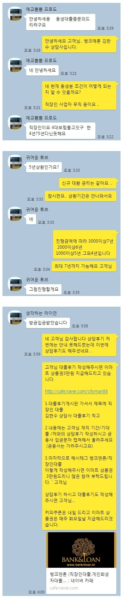

4대보험 가입 직장인 3분 스피드 당일대출 3500만원 승인사례!!
안녕하세요 뱅크앤론 회원 여러분 ...^^ 김한수 상담사입니다.
오늘은 4대보험 직장인 스피드 당일대출 사례를 안내해 드리고자 합니다.
고객님께서는 바쁘셔서 지인분께서 문의 주셨습니다. 재직 4년 연봉 3600만원이시고 기대출로는
카드론 500만원 대부업 300만원 캐피탈 1300 정부상품 400만원 약 3000만원의 채무를 가지고 있었습니다.
대환조건이 아닌 무조건 필요자금이 3000만원 이상이고 .. 통화 및 서류 보내기가 어려워서 .. 직장인 조건 당일조건으로 가능한곳 통해 조회해본 결과
A금융사 3000만원 금리 18% B금융사 3500만원 금리 14% 이렇게 한도나왔습니다.
조건및 상환기간 등 봤을때 B금융사가 괜찮아서.. 고객님 진행 도움드렸습니다.
3분만에..대출 승인되서 고객님 필요한 자금 쓸 수 있게 도움드렸습니다..
아래는 저와 고객님 카톡 대화 내용입니다. 대출이 필요할때 문의주시면 도움드리겠습니다. 감사합니다.
